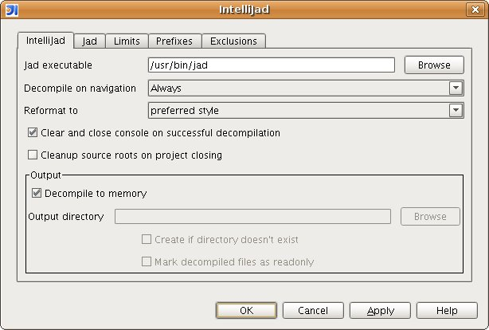
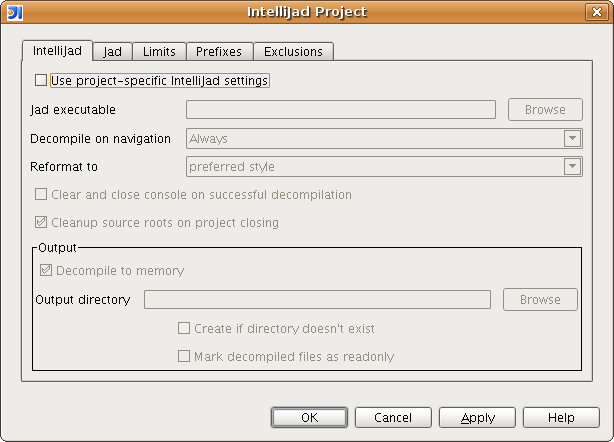

IntelliJad options
The basic IntelliJad options control the location of the Jad executable, the behaviour
for navigation-triggered decompilation, and the results of decompilation.

The path to the Jad executable must be absolute, and include the executable itself. The
easiest way to define this value is to use the "Browse..." button to navigate through your
computer's folders.
There are three basic behaviours that may occur when you open a class file in the editor.
| Name |
Behaviour |
| Always |
The class will be decompiled automatically and immediately, with no user input required. |
| Ask |
A dialog will appear, asking for confirmation before proceeding with the decompilation. |
| Never |
Decompilation will never take place due to navigation events. |
Additionally, exclusions (see
Exclusions) may have an effect
on the
Always and
Ask behaviours.
When the Decompile to memory option is checked, the decompilation output will not
be written to disk but just held in memory. From an IntelliJ IDEA point of view, you will
see no difference to the behaviour of IntelliJad.
When the Decompile to memory option is not checked, you will need to provide
a location to decompile classes to. By also checking the Create if directory doesn't exist
option, the decompilation location will be automatically created on the first decompilation
if it doesn't already exist. You may also mark decompiled files as read-only.
In order to override the general IntelliJad Project settings defined in the IDE configuration, open the
IntelliJad configuration from the Project area of IntelliJ's settings view.

By selecting the "Use project-specific IntelliJad settings" in this dialog, you will enable
project-specific settings for decompilation. The meanings of all other settings stay the same
as described by this help.